Approved in each section. The things you set once — prices, rubrics, templates, statuses — live in 8 places: a tab in five sections (Color Belt, Star, Black Belt, Camps, Finance), the page's ⋯ menu in two (Prospects and Calendar — your v0.245: “like the Calendar's Event types”), and the school-wide Settings page (account menu → Admin), which holds only the schools' addresses and phones. One home doesn't fit: Classes and ranks are used by the Schedule, Calendar, Forms and Testing, but live inside Color Belt testing (v0.38). The Schedule and Forms say “Add classes in Testing → Classes and ranks” — once Star goes live that is Testing → Color belt testing → Classes and ranks. Your plan of 2026-10-17 (not decided yet): move them to a school-wide Settings once the Schedule and Calendar are built. They are now. (Preview screenshots at PC size · fake data)
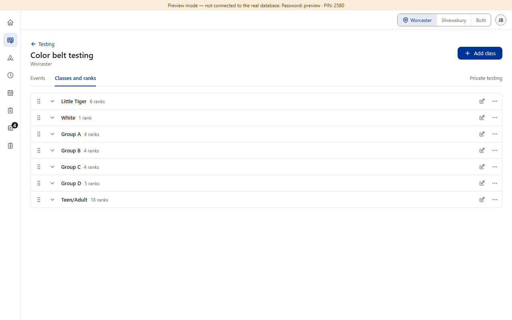
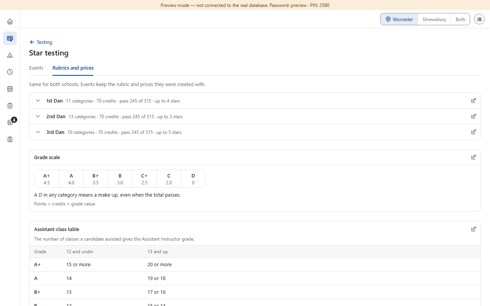
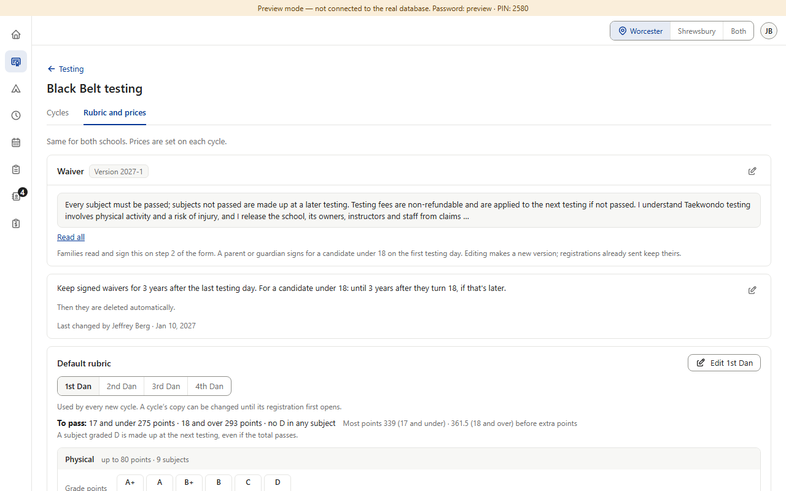
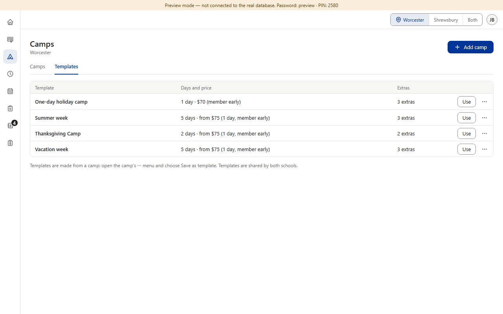
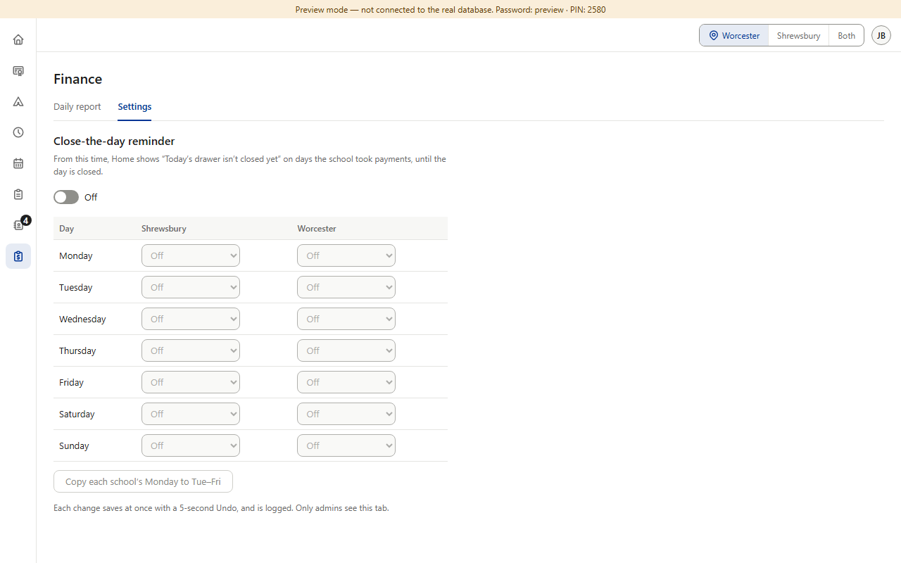
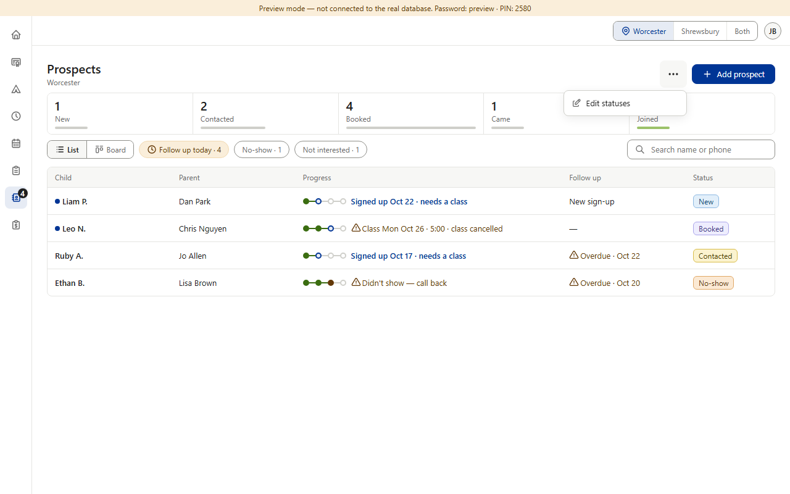
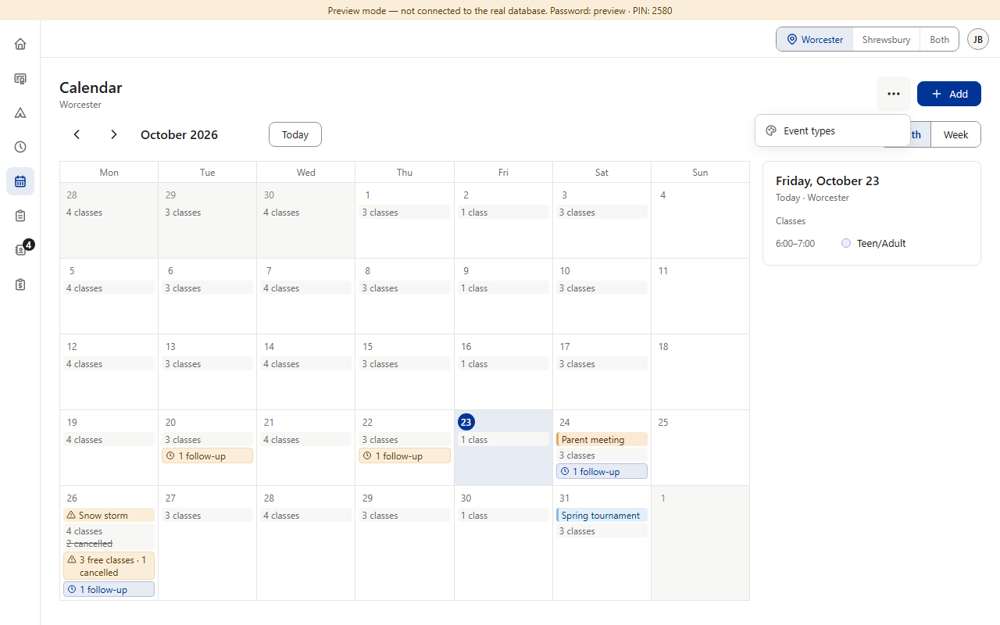
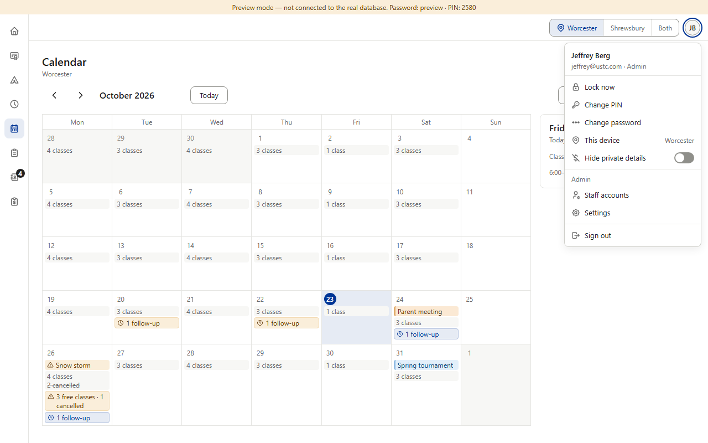
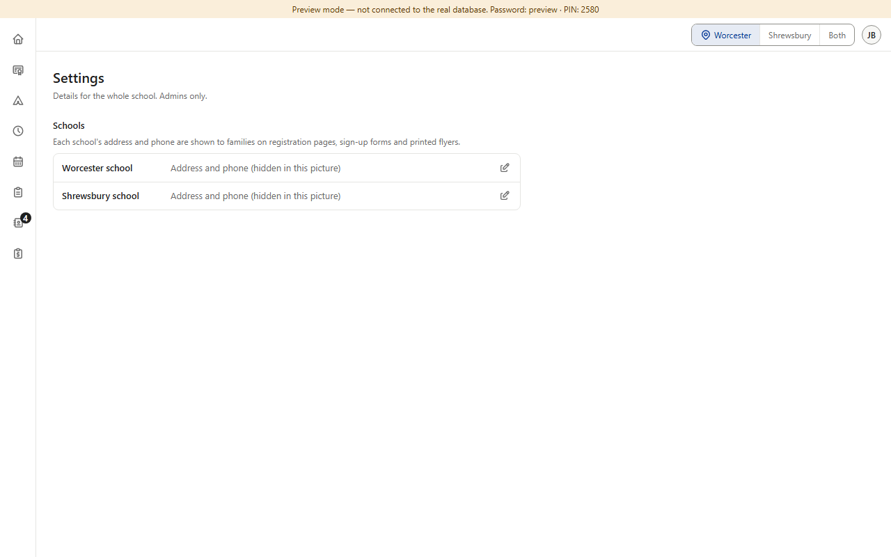
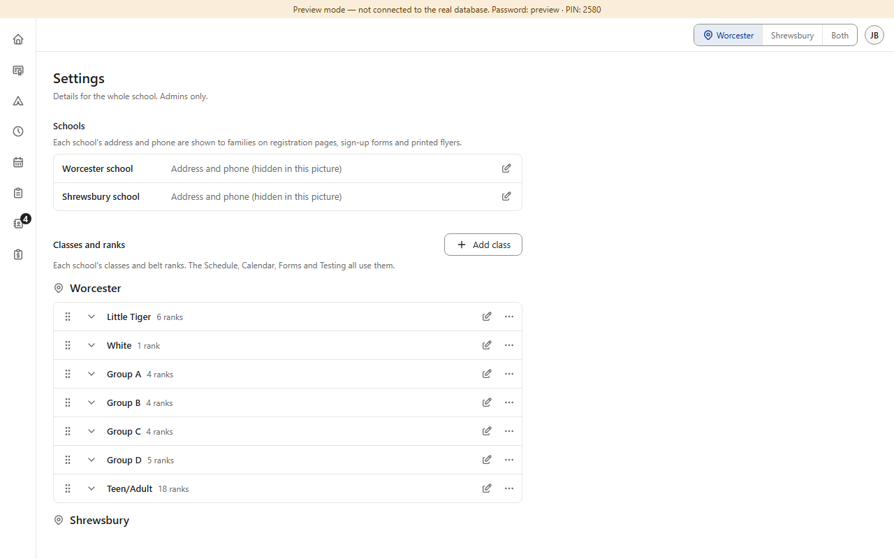
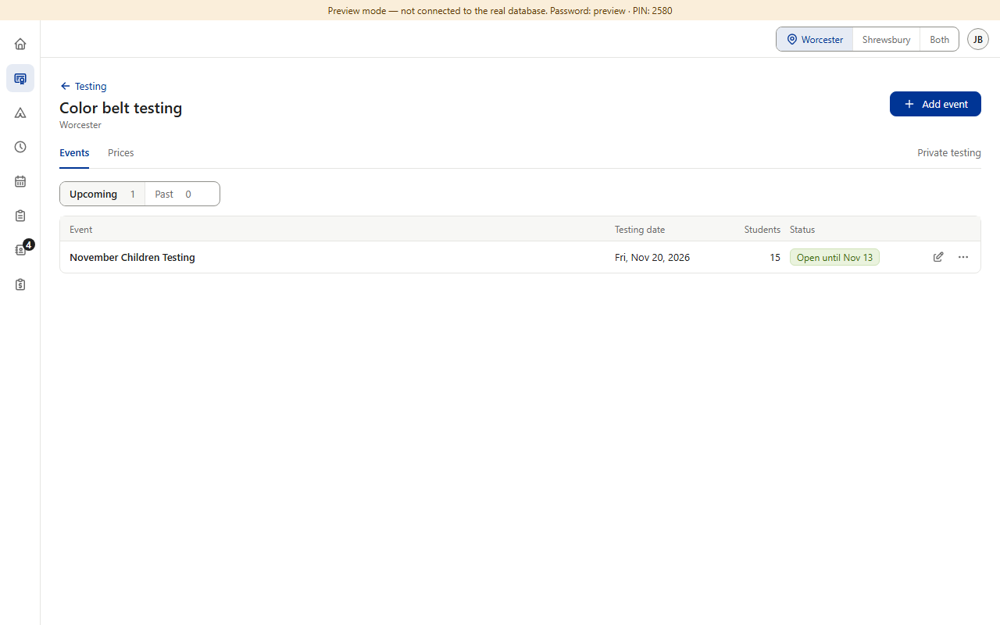